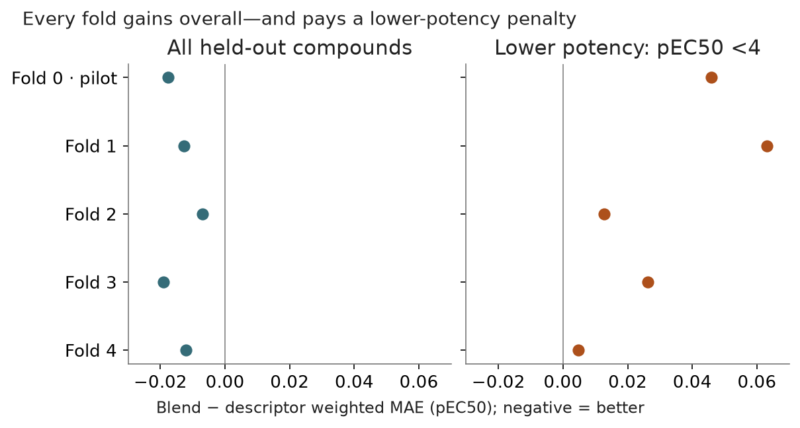

Locked hybrid — all five folds completed
Status: completed · Synthesis updated 2026-09-08. Original dates and immutable protocol history remain in the source evidence.
Question
Does the same training-selected blending procedure hold across the remaining folds?

PNG · SVG · Plotted data · Figure provenance
{kind=link}
{kind=link}
Design and fitted/frozen flow
Frozen vectors → stable ridge and ligand descriptors → LightGBM [independently FIT-selected]. Three grouped meta folds and deeper selection create honest inner OOF inputs; convex weighted-MAE mixture fitted inside FIT. Fold0 reused byte-identically; folds1–4 newly fit.
Results
Pooled weighted MAE improves 0.500588 → 0.486790; raw MAE 0.599636 → 0.594731; Spearman 0.656863 → 0.686392. Weighted error improves in all five folds. At pEC50 ≥4: 0.434197 → 0.411839; below4: 0.840152 → 0.870134.
Implication and limits
The lower-potency group worsens in every fold. Weights are 1/max(SE,0.1); below4 is 31% of compounds but 16.4% of weight. Locked recipe means procedure, not one fixed mixture coefficient. No prospective holdout or retraining variability estimate.
All evidence is retrospective. Historical budgets, splits and raw versus uncertainty-weighted scores must remain distinct.
Source evidence
Original reports and exact tables (historical report links may refer to unbundled files).
- experiments/20260908_descriptor_nesso_blend_allfolds/README.md
- artifacts/experiments/descriptor_nesso_blend_allfolds_20260908/metrics.json
- artifacts/experiments/descriptor_nesso_blend_allfolds_20260908/all_test_predictions.csv
- artifacts/experiments/descriptor_nesso_blend_allfolds_20260908/verification.json